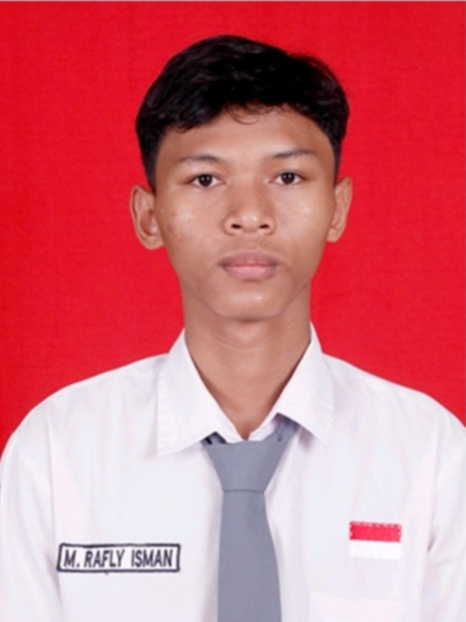
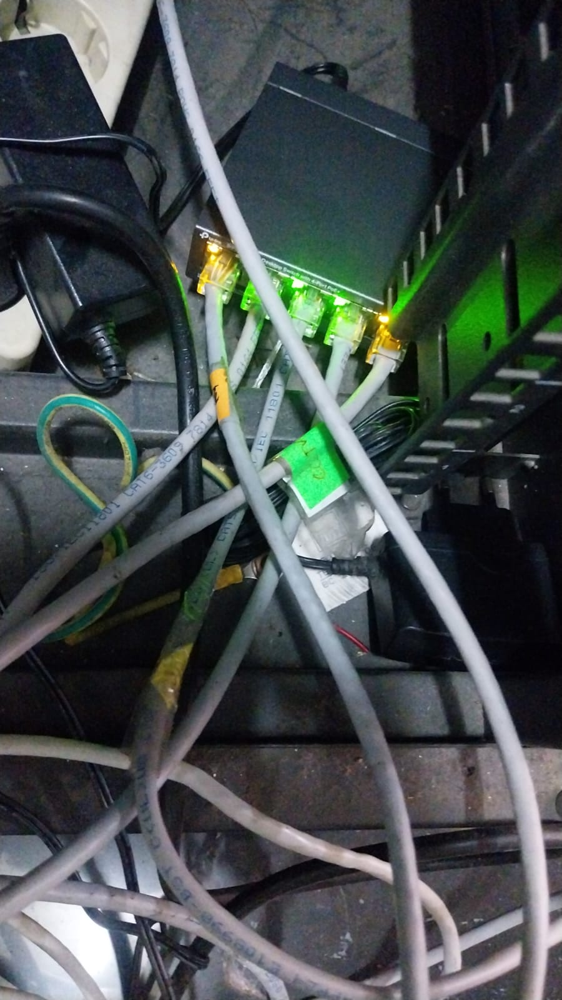
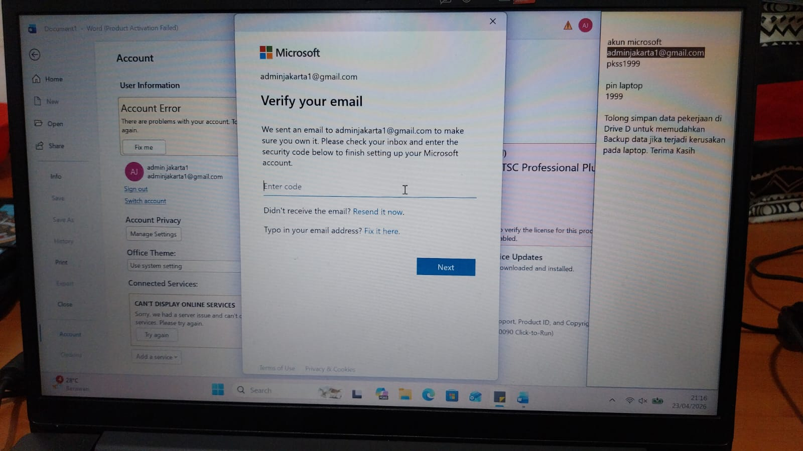
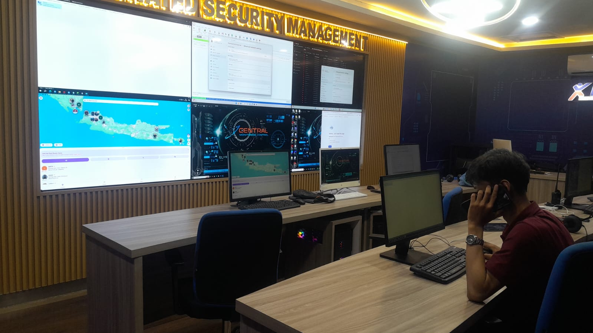

Saya adalah mahasiswa Informatika yang memiliki minat besar pada bidang jaringan komputer, infrastruktur IT, dan keamanan jaringan.
Hubungi Saya Lihat Project
Explore My Portfolio
Nama saya Muhammad Rafly Isman. Saya sedang menempuh pendidikan di bidang Informatika dan memiliki ketertarikan pada dunia Network Engineering.
Saya mempelajari TCP/IP, subnetting, routing, switching, VLAN, Cisco Packet Tracer, MikroTik Winbox, dan Wireshark.
| Tahun | Institusi | Jurusan |
|---|---|---|
| 2025 - Sekarang | Universitas Siber Asia | Informatika |
| 2023 - 2025 | SMK Trimulia Jakarta | Teknik Komputer dan Jaringan |

Membuat simulasi jaringan menggunakan router, switch, dan komputer.

Mengecek dan menyelesaikan kendala client secara langsung atau remote.

Memantau jaringan secara real-time agar tetap stabil dan aman.
Email: raflyisman19@gmail.com
Telepon: 087849453748
Lokasi: Indonesia